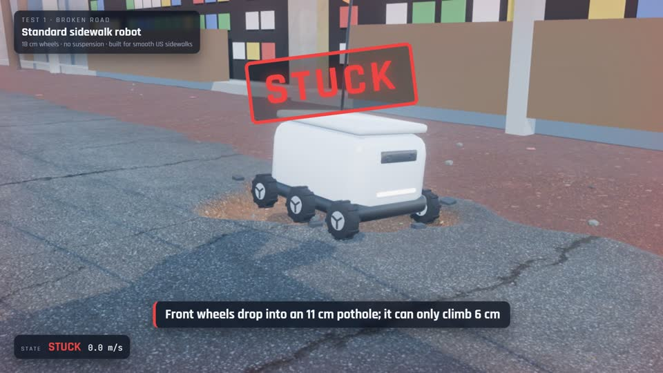
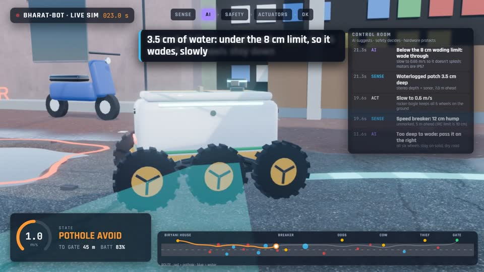
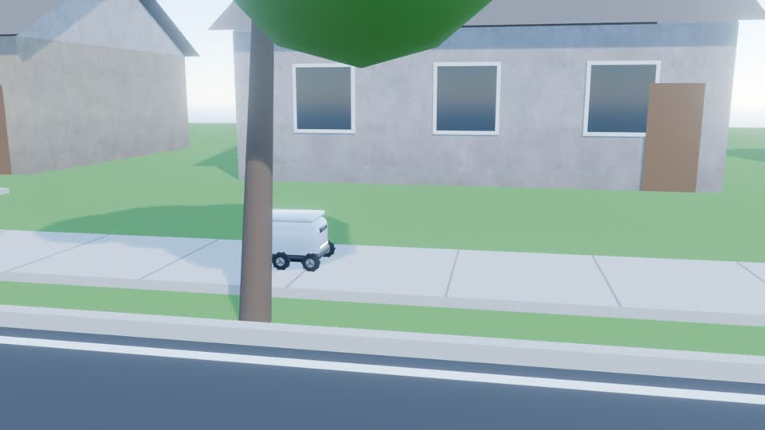
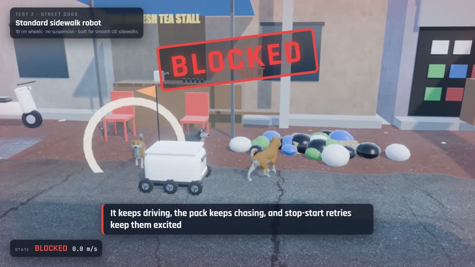
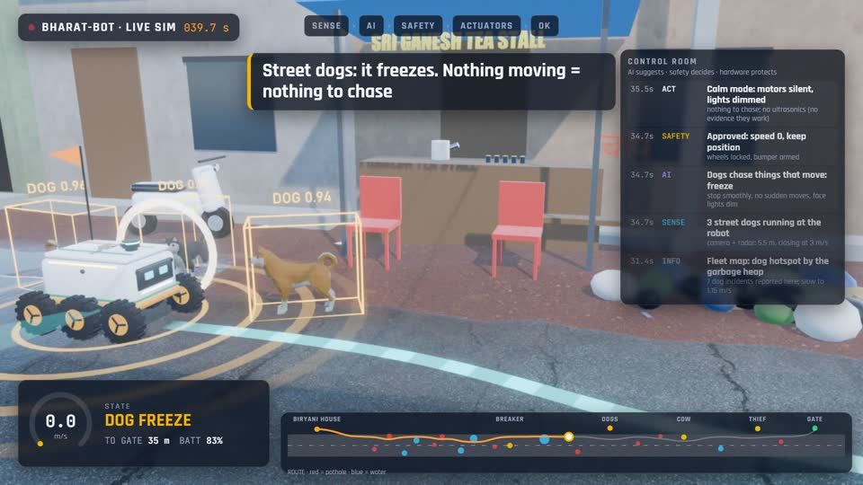
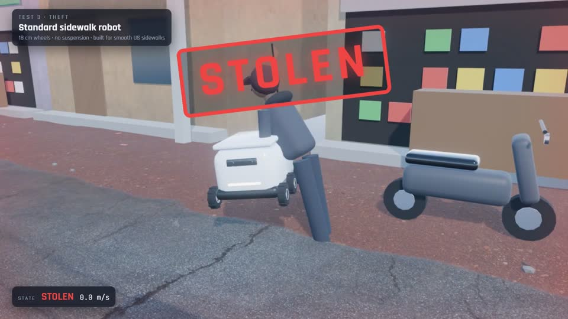
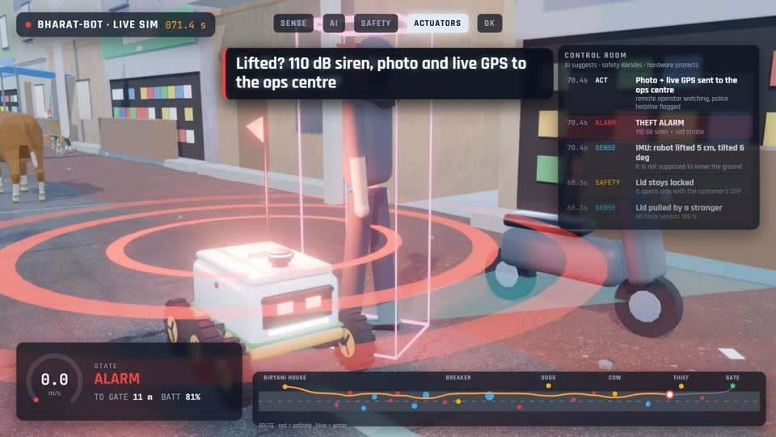
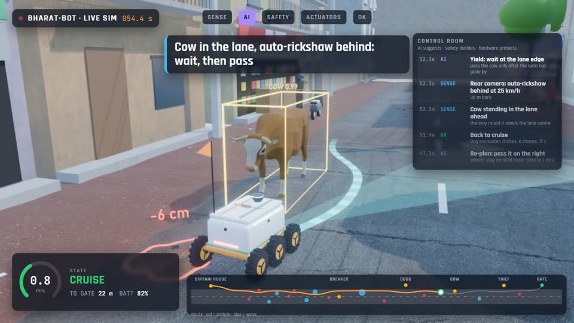
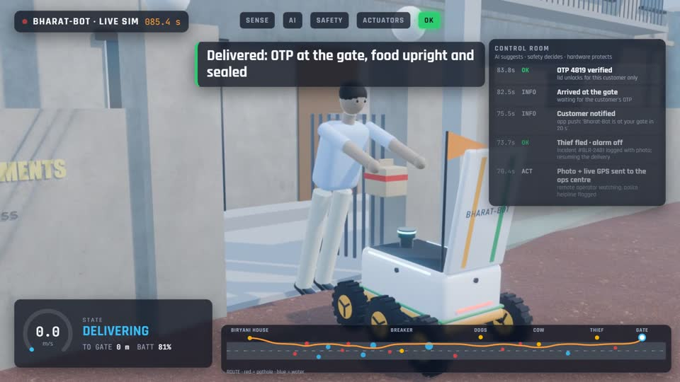

Test 1 · Broken road
Potholes and puddles


Over 200 random broken stretches: standard robot 58% got through, Bharat-Bot 92%.
Sidewalk delivery robot · India edition
Built for potholes, street dogs, cows and thieves
Sidewalk delivery robots are built for smooth pavements. This project drops a standard one onto a simulated Indian street, watches it fail three ways, then sends Bharat-Bot, an India-adapted design, down the same street and 200 random ones.
Watch
The film covers the problem, the standard robot's three failures, Bharat-Bot's full run with a control-room HUD, the results, the safety design, the cost in rupees and what we still don't know. The one-minute cut is for sharing.
The videos are too big for a git repository, so they are attached to the GitHub Release with the raw Blender renders (720p, no sound):
The problem

Robots like Starship's have made more than 10 million deliveries on pavements like this. None of the makers publishes how deep a pothole its robot can cross or how much water it can wade through, and an Indian street asks for both, plus a plan for dogs, cows and auto-rickshaws.
Every number on this page is sourced or marked as an estimate in research/india-delivery-robots.md (66 sources).
Three tests
The standard robot is modelled on today's sidewalk robots: 9 cm wheels that climb 6 cm, no way to judge water, a locked lid with no alarm, and no plan for dogs or traffic. Bharat-Bot drives the same street.


Over 200 random broken stretches: standard robot 58% got through, Bharat-Bot 92%.


Over 200 random packs: standard robot 0%, Bharat-Bot 100% (see the caveat under the results).


Over 200 attempts: standard robot 0%, Bharat-Bot 98%. A standard robot given a lid siren scores 100%, so any robot can have this one.


The India-adapted design
Results
The film shows one fixed street. sim/evaluate.py then draws 200 random streets for every test
from the ranges in the research (pothole depth and spacing, rain, how fast and how long dogs chase, the
auto-rickshaw's speed, where the thief waits) and runs every robot on the same 200.
| Test (200 streets each) | Standard robot | Upgraded standard robot | Bharat-Bot |
|---|---|---|---|
| Full delivery | 0% [0–2] | 0% [0–2] | 92% [88–95] |
| Broken road | 58% [51–65] | 68% [62–75] | 92% [88–95] |
| Street dogs | 0% [0–2] | 0% [0–2] | 100% [98–100] |
| Thief | 0% [0–2] | 100% [98–100] | 98% [96–99] |
| Bharat-Bot without… | Full-delivery success | Change | What goes wrong instead |
|---|---|---|---|
| nothing (complete) | 92% [88–95] | — | — |
| the dog freeze protocol | 40% [33–46] | −53 [−60, −46] | runs out of time in a stand-off with the dogs |
| the tamper alarm | 48% [42–55] | −44 [−51, −37] | stolen |
| pothole & water perception | 85% [79–89] | −8 [−11, −4] | drives into water over its wading limit |
| traffic yield | 87% [82–91] | −6 [−9, −2] | touches the auto-rickshaw beside the cow |
| the rocker-bogie | 92% [88–95] | 0 [0, 0] | nothing |
| perception and rocker-bogie | 84% [78–88] | −9 [−13, −5] | drives into water over its wading limit |
Biggest caveat. The dog result rests on one hypothesis from the film's model: a still, silent robot makes a pack lose interest about five times faster than one that has merely stopped. If any still robot calmed dogs that well, the upgraded standard robot would get past the pack on 21% of streets instead of 0%. A siren on the lid is enough to stop a thief; dogs and broken, flooded roads are where Bharat-Bot's design wins. Full write-up, with seeds you can replay: research/evaluation.md.
Safety architecture
The same rule as GH-01, Sumith Shridhar's greenhouse digital twin. The AI may propose anything; a safety controller with hard limits approves or vetoes it; and hard-wired cut-offs still protect people and the robot if every computer fails.
Every decision in the simulation is logged as SENSE → AI → SAFETY → ACT, and the film's control-room HUD replays that log frame by frame.
Honest economics
against ₹8–12 lakh landed for an imported Starship-class robot.
Only when it's busy. Gated societies, campuses, hospitals, night and monsoon hours. Not open streets, where a courier is cheap.
| Robot | 8 / day | 15 / day | 20 / day | 30 / day |
|---|---|---|---|---|
| ₹2.5 lakh (prototype-grade) | ₹76 | ₹41 | ₹31 | ₹20 |
| ₹4.0 lakh (pilot-grade, certified) | ₹104 | ₹55 | ₹42 | ₹28 |
Estimates, not quotes: a 3-year life at 330 days a year, maintenance at 10% a year, 5% a year for losses, ₹60 a day for power, SIM and cloud, and one remote operator (₹25,000 a month) for every 6 robots. A courier costs "often under ₹50", roughly ₹40–80.
Honest limits
A one-week pilot in one gated community: success rate, interventions per km, dog encounters, tamper events and ₹ per delivery.
How it's built
A lattice path planner, rocker-bogie and rigid-chassis terrain kinematics, a dog pack that alerts, chases and loses interest, a thief, a cow, an auto-rickshaw and the customer. The runs are deterministic, so the film and its HUD come from the same run.
sim/build_scene.py turns a simulation run into an animated shot: procedural robots, people,
auto-rickshaw and street, Poly Haven textures, Quaternius dogs and cow, rendered with EEVEE.
React composes the film: the control-room HUD is drawn from per-frame telemetry, the results from
evaluation.json, and the tanpura-drone music is synthesised in Python.
# the four simulations, with their event logs (about 25 s)
python sim/simulate.py all
# 200 random streets per test and robot, writes research/evaluation.md (about 5 min)
python sim/evaluate.py
# one seeded street, any robot
python sim/simulate.py bharat_full --seed 7 --robot baselineCredits
video/scripts/make_audio.py).